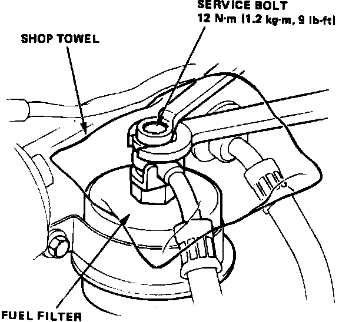
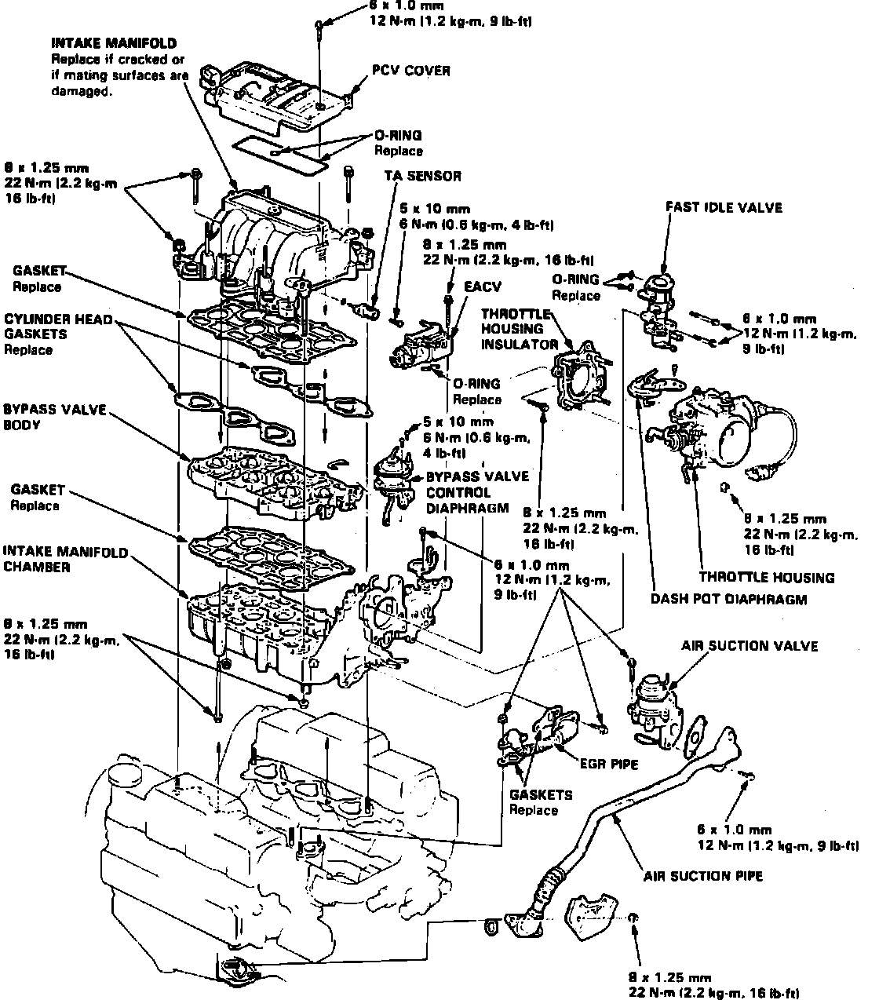

Intake Manifold: Service and Repair
Fig. 2 Relieving Fuel System Pressure:

Fig. 17 Intake Manifold Replacement:

Relieve fuel system pressure by loosening the service bolt on top of fuel filter, Fig. 2, one complete revolution. Refer to Fig. 17, when replacing intake manifold.